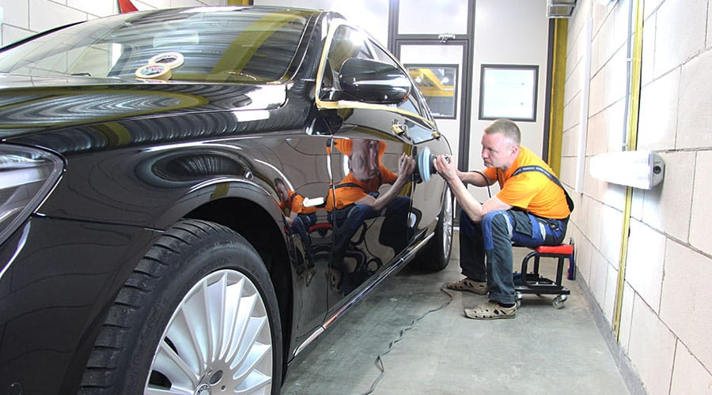
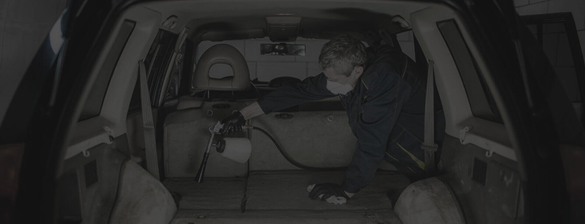

Сначала оцениваем лак, кожу или дерево и их состояние, затем выбираем способ работы.
Москва / БережковскаяВнимание
Внимание
к материалу.
Лак, кожа и дерево ведут себя по-разному. Работа начинается с оценки материала и его состояния.
Галерея ателье



Показываем реальные работы, а не рендеры. Ориентир по стоимости — после осмотра.
Мотоциклы, водный и воздушный транспорт, кожаная мебель и изделия из кожи.